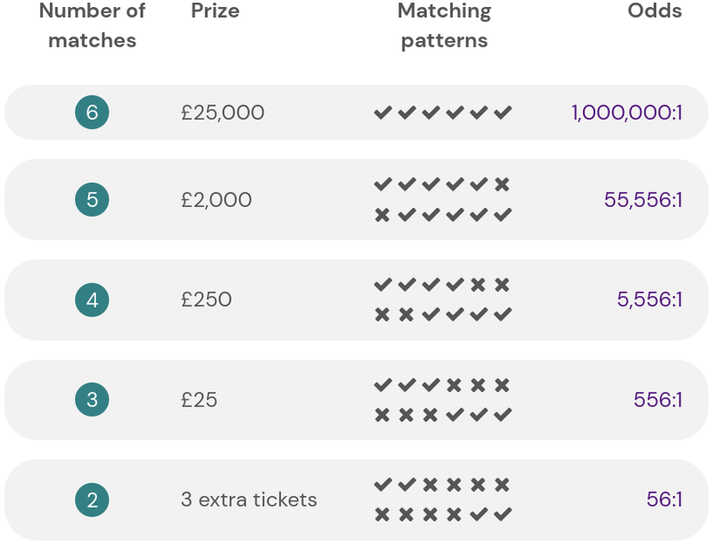
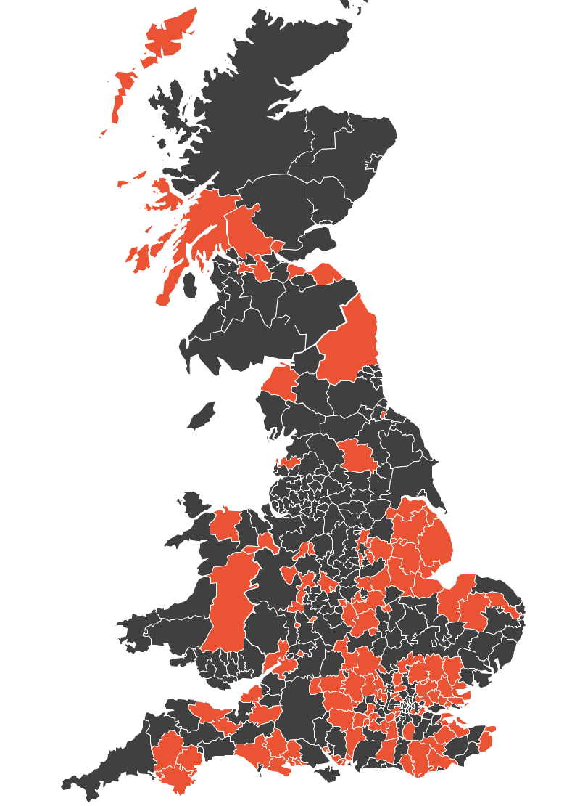

Exeter City Council is to launch a local lottery as a means of “empowering and enabling communities to help themselves”.
Despite the 2005 Gambling Act and the sector regulator it established defining lotteries as form of gambling, Labour councillor Martin Pearce has repeatedly insisted that the lottery, which he proposed, will instead promote “incentivised giving”.
The council draw will be classified as a “large society lottery” which will require an operating license as it will have a jackpot prize of £25,000. The odds of winning this prize will be 1,000,000 to 1 as it would require correctly matching all six numbers in a weekly draw.
Five first or last matches would win £2,000 at odds of 55,556 to 1, four £250 at 5,556 to 1 and three £25 at 556 to 1. Two matches would win three lottery tickets, worth £3, at odds of 56 to 1. The council presents these together as “the odds of winning any prize are 50 to 1”.
It intends Gatherwell, a commercial operator which manages more than 100 UK local authority lotteries, to deliver most aspects of its lottery, including covering the cost of prizes however unlikely it is that anyone would win the jackpot.
 Gatherwell local authority lottery prizes and odds
The council claims that the lottery “proceeds will stay in the city”. These don’t include the 20% of ticket sales revenue the operator keeps (of which 15% is payable to the government as VAT) or the 20% it collects towards the cost of prize payouts.
It’s not clear whether the second tranche could partly translate into additional profit for the company: unlike Premium Bonds, prize distribution is not a function of fund size.
Lottery players will choose whether some or all of the remaining 60% of ticket sales revenue goes to a council-nominated organisation via its existing grants programme. If they select a beneficiary themselves, from a shortlist of options also chosen by the council, the council still keeps 17%.
All it has so far said about the choice of beneficiaries is that officers and the executive portfolio holder, currently Martin Pearce, would pick them.
The West Devon and South Hams SeaMoor Lotto is cited as a local exemplar. Its terms and conditions impose a range of eligibility restrictions and give the council powers to reject applications and remove beneficiaries without justification.
The council also says that lottery operators are not supposed to be a “vehicle for profit for commercial organisations”. Gatherwell has been owned by Australian corporation Jumbo Interactive since 2019, and was expected to generate AS$4.6 million in revenue for the parent company during its first eighteen months of ownership alone.
Jumbo Interactive lottery revenues for the year to June 2022 were AS$91,098,000. Gatherwell transaction values increased 31% to £12,175,000 as it expanded its coverage of UK local authorities in search of market dominance.
Jumbo Interactive 2022 annual report financial highlights
Martin Pearce said the lottery would be of particular benefit to “organisations which haven’t got the capacity to fundraise themselves” which he characterised as those which “don’t have a team going out trying to secure legacies from people” or which “might be a small charity or even a community group that doesn’t even have any paid staff and is reliant completely on volunteers”.
He also said that it would “give them a mechanism for donating” when one is not otherwise available, echoing the council’s statement that it would be a “potentially more effective facility with which to fundraise” which would give “opportunities to smaller groups”.
No evidence at all was presented to support these claims at any of the three council meetings that have discussed the proposals.
It has not been explained, for example, why lottery players would pick organisations of which they have not previously heard as beneficiaries in preference to established high-profile local charities.
Nor has an assessment of the likely impact of a council-run lottery on other local organisations which already run lotteries to raise money taken place. The Royal Devon University Healthcare NHS Foundation Trust, Hospicare, Devon Air Ambulance and, as council leader Phil Bialyk has highlighted, the Donkey Sanctuary all do so.
The importance of gift aid, which allows charities (and community amateur sports clubs) to claim an extra 25% of the value of UK taxpayer donations, has not been considered either. Eligible organisations receive £125 for every £100 donated this way, which is more than double the £60 they would receive for the same sum bet on the lottery.
And the value of direct relationships between community and voluntary sector organisations and their supporters has been ignored by the council too, unless a desire to intervene between them and interfere with who gets what is part of its intention.
 Gatherwell local authority lottery coverage
Without knowing whether a council lottery will incentivise additional giving or simply redistribute and reduce the value of existing donations, perhaps asking how much money is at stake is a way to estimate the extent of any damage it might do.
The council report on its proposals does not say. When asked to give details by Green Party councillor Amy Sparling and pressed by Liberal Democrat councillor Michael Mitchell, Martin Pearce said the council hoped to raise “somewhere between £40,000 to £80,000” each year on sales of “2,000-ish tickets a week”.
Selling 2,000 lottery tickets each week would yield £62,400 a year for local organisations and £41,600 for Gatherwell, of which half would pay for prizes provided people win them.
The same money donated via gift aid to an independent trust dedicated to supporting under-resourced Exeter community and voluntary organisations, an alternative approach suggested by Green Party councillor Diana Moore, it would yield £130,000 a year and none of the money would end up in Australia.
However SeaMoor Lotto, which is marketed to a larger population than Exeter, only expects to raise £24,000 this year having reached 761 ticket sales a week after four and a half years of operation.
With launch costs of around £5,000 and ongoing costs which “would not exceed £5,000 per annum” an Exeter City Council lottery must be at risk of making very little.
Martin Pearce nevertheless expects it to significantly increase the size and reach of the council community grants scheme. He said: “One of the exciting things about this lottery is it means we’re going to have an expanded community grants scheme. The fund will be larger than it is currently so we’ll be able to touch more organisations in the city.”
The council gave 167 grants to 124 local organisations last year, spending a total of just over £964,000 across its existing programmes.
It underspent by £27,500. It’s not clear why it didn’t use this money to “widen the pool of organisations” that benefit from its programmes in the way Martin Pearce intends, although its demanding eligibility criteria may have something to do with it.
All applicants must, among other things, show how they address one or more key council priorities, demonstrate how they meet “the demands of development across the city” and prove that they have community support by providing evidence of targeted consultation and engagement.
They must also provide an impact report that demonstrates achievement, promote the council’s involvement and give the council the right to share all the provided information in its publicity materials. Applicants cannot appeal council grant decisions.
The council has not said how many Exeter community and voluntary organisations it has identified which can meet these criteria but do not already receive its support and lack the means to accept donations from supporters while nevertheless being eligible to receive lottery funding.
This entails possessing a bank account, being formally constituted with a management committee with a minimum of three members that meets on a regular basis and being able to put together a detailed lottery promotion plan.
The yield from a council lottery might only be small beer in the context of its existing grants programme – even more so when £3,683,000 of National Lottery grants to Exeter organisations are factored in – but its potential to cause harm is still real.
A recent Public Health England review which “analysed the best available international research evidence on risk factors and gambling-related harms” found that 0.5% of the population reached the threshold to be considered problem gamblers, while another 3.8% are at risk.
It also found that 7% are negatively affected by someone else’s gambling. Women are more likely to be affected this way than men and the most severe impacts of problem gambling are felt most by immediate family members.
In economic terms, the review found that the burden of harmful gambling cost around 9% of the profits it generates. It also identified three themes that highlighted opposing views between commercial and non-commercial stakeholders – people who work for the gambling industry and people involved in healthcare and charity work as well as those with relevant lived experience.
The first group believed harmful gambling was caused by co-morbidities or a tendency toward addiction, that its is only experienced by a minority of gamblers and no-one else, and that its prevention and reduction should be focussed on individual interventions and treatment.
The second group thought that gambling harms are caused by gambling products and environments, that they can be experienced by any gamblers and also indirectly by families and society, and that tackling them requires a whole systems, public health approach.
The council’s risk assessment of the proposals did not address any of these issues, focussing instead on potential financial, reputational, political and commercial risks to itself.
It thinks that limiting bets to a maximum of £20, taking payment by card or direct debit and not selling single tickets or tickets for a draw on the same day, precluding instant reward, is sufficient to mitigate the risks of problem gambling.
However there does not appear to be a way to restrict ticket sales to over-sixteens or prevent several members of the same household spending £20 a week each, and the operator has a profit incentive.
When Conservative councillor Anne Jobson asked for more detail on safety measures, Labour councillor Duncan Wood responded by saying he was “completely comfortable” with the council’s approach. Martin Pearce said lots of safeguards were in place, adding: “82.5% of people who play these lotteries are from ABC1 social categories”.
The suggestion that a high proportion of players from higher social groups entails lower risk of gambling harms appears repeatedly in Gatherwell’s promotional materials. The company’s claims are based on unpublished internal research performed by itself and a single, non-peer reviewed report by a commercial market research company. Martin Pearce described this as “lots of really good research”.
Public Health England, in contrast, says that “demographic factors, particularly being male, appear more significant in predicting at-risk gambling behaviour than economic factors such as income, employment and relative deprivation”.
It also says that the minority among the most disadvantaged who do gamble have “the highest levels of harmful gambling and they are also the most susceptible to harm”.
One might think that, lacking insight into the consequences of launching its own lottery, the council could have consulted Exeter’s voluntary and community sector organisations, many of which deliver essential support to the very people who are at risk of gambling-related harms while also being potential recipients of lottery-financed grants.
Martin Pearce has been asked about this several times. He said the council would “explore” a public consultation, although he added that he didn’t think it would be necessary “because there’s been a number of informal discussions” involving “faith groups, community centres, sports organisations, lots of community partners” from which “the overwhelming response has been positive”.
When asked whether this approach was consistent with the council’s consultation charter he said “it would probably become appropriate that we’ll follow the formal consultation practices and processes” after the council had approved the lottery plans, although a key principle of the charter is that consultation must take place before decisions are made.
Opposition councillors say that lots of Exeter voluntary sector organisations have not been consulted and criticised the limitations of only involving “groups that we happen to know”.
The decision to go ahead regardless was taken last week despite Green Party councillor Tess Read’s proposal to instead first assess the likely impact of a lottery on the council, the city’s voluntary sector and those who would buy tickets and their households, then use the assessment as a basis on which to properly consult the public and the voluntary sector about the plans.
Labour councillor Yvonne Atkinson described the lottery as a “fantastic opportunity for the people of Exeter and our local voluntary groups” and council leader Phil Bialyk said: “Sometimes, I know it’s difficult, sometimes you’ve just got to trust us a little bit, just a little bit”.